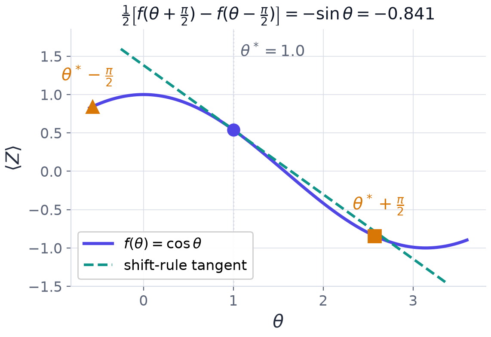
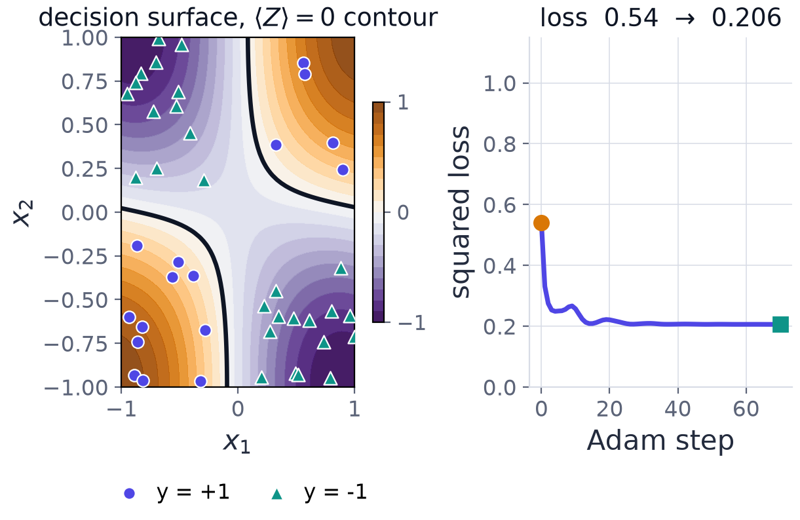
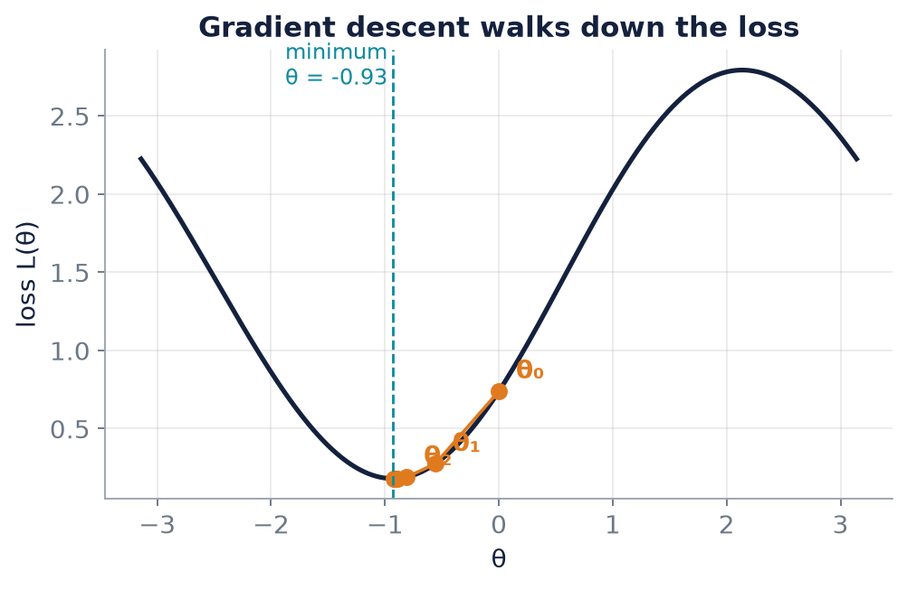

Chapter 10: Gradients and Training: the Parameter-Shift Rule¶
A variational circuit is trained by changing its parameters to lower a loss, and the classical optimiser needs to know in which direction to move. This chapter explains how the quantum device supplies that information. The central result is the parameter-shift rule: for a Pauli rotation the exact derivative of an expectation value is obtained from two evaluations of the same circuit at shifted angles, with no small step size and no approximation. We prove it, count its cost, place it in the hybrid training loop, and then carry out gradient descent by hand in three worked problems: the gradient of a single rotation, one complete descent step of a one-qubit classifier, and the full training of a one-parameter model on three data points.
10.1 Why a gradient, and how it splits¶
Given labelled data \((x_i,y_i)\) with \(y_i\in\{+1,-1\}\), measure how wrong the model is with the mean squared error
and walk downhill by gradient descent, \(\theta\leftarrow\theta-\eta\,\partial L/\partial\theta\), where \(\eta\) is the learning rate: too small is slow, too large overshoots. The chain rule splits the gradient into a classical part and a quantum part:
The classical computer knows \(f_i-y_i\). The quantum computer must supply \(\partial f/\partial\theta\), and that is what the parameter-shift rule is for. Gradient-free optimisers such as COBYLA or Nelder-Mead avoid derivatives altogether, at the cost of more circuit evaluations.
10.2 The parameter-shift rule¶
Consider a gate \(e^{-i\theta P/2}\) where \(P\) is a Pauli operator, so \(P^2=I\). Then
The expectation value \(f(\theta)=\langle\psi(\theta)\vert O\vert\psi(\theta)\rangle\) is quadratic in the state amplitudes, hence quadratic in \(\cos\frac\theta2\) and \(\sin\frac\theta2\) (all the other gates are constants with respect to \(\theta\)). Using \(\cos^2\frac\theta2=\frac{1+\cos\theta}{2}\), \(\sin^2\frac\theta2=\frac{1-\cos\theta}2\) and \(\cos\frac\theta2\sin\frac\theta2=\frac{\sin\theta}2\), every such quadratic collapses to a sinusoid:
for constants \(A,B,C\) that do not depend on \(\theta\).
The parameter-shift rule
For a gate \(e^{-i\theta P/2}\) with \(P^2=I\) (any Pauli rotation), the derivative of the expectation value is
Proof. From \(f=A+B\cos\theta+C\sin\theta\),
so the half-difference is \(\tfrac12\big[-2B\sin\theta+2C\cos\theta\big]=-B\sin\theta+C\cos\theta=f'(\theta)\). \(\blacksquare\)
Four properties follow.
- Exact, not a finite difference. There is no step-size bias, since \(f\) is a sinusoid in each \(\theta\). Note that the shifts are large, a quarter turn, not infinitesimal.
- Immune to the shot-noise blow-up of finite differences. A finite difference \([f(\theta+h)-f(\theta-h)]/2h\) divides the shot noise by \(h\): its variance is multiplied by \(1/h^2\), so a small \(h\) drowns the signal. The shift rule has no such division.
- Cost: two circuit evaluations per parameter, on the same hardware as the forward pass. For \(p\) parameters this is \(2p\) circuits per gradient, hence \(O(p/\varepsilon^2)\) shots. There is no backpropagation shortcut: intermediate quantum states cannot be stored and reused, so gradient cost is linear in the parameter count.
- Generalised shift rules cover gates whose generator has more than two distinct eigenvalue gaps, at the price of more evaluations.
A caveat
Shot noise still limits the estimate. If \(\operatorname{Var}[\partial_\theta L]\) is exponentially small, exactness is useless: Chapter 12 explains when that happens.

Figure 10.1 shows the rule geometrically for \(f(\theta)=\cos\theta\) at \(\theta^*=1.0\). The slope of the chord through the points at \(\theta^*\pm\frac\pi2\) equals the slope of the tangent: \(\tfrac12\big[f(\theta^*+\frac\pi2)-f(\theta^*-\frac\pi2)\big]=-\sin1=-0.841\).
Example 10.1: parameter shift on a single rotation
A minimal variational circuit prepares \(\lvert0\rangle\), applies \(R_Y(\theta)\) and measures \(Z\).
(a) Show that \(f(\theta)=\langle Z\rangle=\cos\theta\). (b) Apply the parameter-shift rule and verify that it returns \(f'(\theta)\) exactly. (c) Evaluate the gradient at \(\theta=\pi/3\).
Step 1, prepared state. The rotation produces a real superposition with half-angle amplitudes: \(R_Y(\theta)\lvert0\rangle=\cos\frac\theta2\lvert0\rangle+\sin\frac\theta2\lvert1\rangle\).
Step 2, expectation value. The \(Z\) eigenvalues \(\pm1\) weight the two squared amplitudes: \(\langle Z\rangle=\cos^2\frac\theta2-\sin^2\frac\theta2=\cos\theta\).
Step 3, the shift rule. \(f(\theta+\frac\pi2)=\cos(\theta+\frac\pi2)=-\sin\theta\) and \(f(\theta-\frac\pi2)=\cos(\theta-\frac\pi2)=+\sin\theta\). The subtraction in the rule turns them into a sum: \(\tfrac12\big[-\sin\theta-\sin\theta\big]=-\sin\theta\), which is exactly \(f'(\theta)=-\sin\theta\).
Step 4, numerical value. At \(\theta=\pi/3\), \(f'=-\sin\frac\pi3=-\frac{\sqrt3}2\approx-0.866\).
Answer. (a) \(f(\theta)=\cos\theta\); (b) the shift rule returns \(-\sin\theta=f'(\theta)\) exactly; (c) \(f'(\pi/3)=-\sqrt3/2\approx-0.866\). The rule costs two circuit evaluations per parameter.
10.3 The hybrid training loop¶
One full turn of the loop has four stages.
- Forward pass. For each point in the minibatch, run the circuit \(M\) times to estimate \(\hat y(x_i,\theta)\) and accumulate the loss.
- Gradient. Use \(2p\) shifted circuits per point (the parameter-shift rule), or two perturbed evaluations in total with the simultaneous perturbation method SPSA, whatever \(p\) is.
- Update. \(\theta\leftarrow\theta-\eta\hat\nabla\mathcal{L}\), typically with Adam. On real hardware SPSA is often favoured because its circuit cost per step does not grow with the parameter count.
- Stop. Use validation accuracy, since a noisy loss makes gradient-norm criteria unreliable.
The shot budget multiplies out as
dominated by the parameter count \(p\). This is why hardware demonstrations use tiny parameter counts. SPSA trades gradient quality for a circuit cost independent of \(p\), which is often the right trade on real devices.
Example 10.2: a shot budget
A classifier with \(p=20\) parameters is trained for \(10\) epochs on \(N=100\) points with \(M=1000\) shots per evaluation. With the parameter-shift rule the total is \(10\times100\times(1+40)\times1000=4.1\times10^7\) shots. With SPSA the factor \((1+2p)=41\) is replaced by \((1+2)=3\), giving \(3\times10^6\) shots, about fourteen times fewer.

10.4 One gradient-descent step by hand¶
Example 10.3: one gradient-descent step of a variational classifier
A one-qubit variational classifier encodes the input and then applies a trainable rotation, \(\lvert0\rangle\to R_Y(x)\to R_Y(\theta)\to\langle Z\rangle\), so that \(f(x;\theta)=\cos(x+\theta)\) (Section 9.5), with the squared loss \(L=(f-y)^2\). Take the data point \(x=\pi/2\) with label \(y=+1\), initial parameter \(\theta_0=\pi/6\) and learning rate \(\eta=0.1\).
(a) Compute the forward pass \(\hat y\) and the loss \(L\). (b) Compute the gradient \(dL/d\theta\) at \(\theta_0\). (c) Perform one update and evaluate the new loss.
Step 1, forward pass. Two rotations compose, so the prediction is a single cosine: \(\hat y=\cos\big(\tfrac\pi2+\tfrac\pi6\big)=\cos\tfrac{2\pi}3=-0.5\).
Step 2, initial loss. The prediction is on the wrong side of zero: \(L=(-0.5-1)^2=2.25\).
Step 3, gradient. Chain rule through the square and through the cosine: \(\dfrac{dL}{d\theta}=2(\hat y-y)\cdot\big(-\sin(x+\theta)\big)=2(-1.5)(-0.8660)=+2.598\). The two minus signs combine into a positive gradient, which is easy to slip on. The positive gradient says that increasing \(\theta\) would make the loss worse, so descent moves \(\theta\) down.
Step 4, update. In radians, \(\theta_0=\pi/6=0.5236\), so \(\theta_1=0.5236-0.1(2.598)=0.5236-0.2598=0.2638\) rad (\(\approx15.1^\circ\)).
Step 5, new prediction and loss. \(\hat y=\cos(1.5708+0.2638)=\cos1.8346=-0.2607\), so \(L=(-0.2607-1)^2=1.589\).
Answer. (a) \(\hat y=-0.5\), \(L=2.25\); (b) \(dL/d\theta=+2.598\), so the parameter must decrease; (c) \(\theta_1=0.2638\) rad, new prediction \(\hat y=-0.2607\), new loss \(L=1.589\): the step reduced the loss.
Remark. One step is not convergence: the prediction is still negative while the label is positive. On hardware the same gradient would follow from two shifted circuit evaluations, exactly as in Example 10.1. The landscape is benign here precisely because there is a single parameter.
10.5 Training one parameter on three points¶
Example 10.4: training one parameter with the parameter-shift rule
The model is \(f(x;\theta)=\langle Z\rangle\) for the circuit \(R_Y(x)\) then \(R_Y(\theta)\), predicting by sign, with the mean squared error loss. Start at \(\theta=0\) with learning rate \(\eta=0.5\). The data are \((x,y)=(1.0,+1)\), \((2.0,+1)\), \((3.0,-1)\).
(a) Show that \(f(x;\theta)=\cos(x+\theta)\). (b) Find the loss and its gradient at \(\theta=0\) using the parameter-shift rule. (c) Take gradient steps; how many points are right after each?
Step 1, the model. Rotations about the same axis add: \(R_Y(\theta)R_Y(x)\lvert0\rangle=R_Y(x+\theta)\lvert0\rangle\), so \(f=\cos(x+\theta)\).
Step 2, the start. At \(\theta=0\):
| \(x\) | \(y\) | \(f=\cos x\) | \(f-y\) | sign right? |
|---|---|---|---|---|
| 1.0 | +1 | +0.5403 | -0.4597 | yes |
| 2.0 | +1 | -0.4161 | -1.4161 | no |
| 3.0 | -1 | -0.9900 | +0.0100 | yes |
Only \(2\) of \(3\) are right: \(x=2.0\) should be \(+1\) but \(\cos2.0\) is negative. The loss is
Almost all of it comes from the misclassified point \(x=2.0\), which is where the gradient will push hardest.
Step 3, the gradient by parameter shift. Shift \(\theta\) by \(\pm\pi/2\) and run each circuit twice:
| \(x\) | \(f(\theta+\frac\pi2)\) | \(f(\theta-\frac\pi2)\) | \(\partial f/\partial\theta\) |
|---|---|---|---|
| 1.0 | -0.8415 | +0.8415 | -0.8415 |
| 2.0 | -0.9093 | +0.9093 | -0.9093 |
| 3.0 | -0.1411 | +0.1411 | -0.1411 |
Each shifted value is a real circuit evaluation, for example \(f(1.0;+\frac\pi2)=\cos(1+\frac\pi2)=-\sin1=-0.8415\). Assemble the loss gradient:
As a check, the exact derivative \(-\sin(x+\theta)\) gives the same three values to six places: the shift rule is exact.
Step 4, descend. \(\theta_1=0-0.5\times1.1154=-0.5577\). Now \(f=(0.9038,\ 0.1281,\ -0.7653)\): all three signs are right after a single step, and the loss falls from \(0.7390\) to \(0.2748\). Continuing:
| step | \(\theta\) | loss | \(\partial L/\partial\theta\) | right |
|---|---|---|---|---|
| 0 | 0.0000 | 0.7390 | +1.1154 | 2/3 |
| 1 | -0.5577 | 0.2748 | +0.5032 | 3/3 |
| 2 | -0.8093 | 0.1905 | +0.1643 | 3/3 |
| 3 | -0.8915 | 0.1816 | +0.0517 | 3/3 |
| 4 | -0.9173 | 0.1808 | +0.0164 | 3/3 |
| 5 | -0.9255 | 0.1807 | +0.0052 | 3/3 |
Answer. One parameter-shift step fixes every prediction. Training settles at \(\theta\approx-0.93\) with loss \(0.1807\). The loss cannot reach \(0\): one cosine cannot be \(+1\) at \(x=2\) and \(-1\) at \(x=3\) at once, but classification only needs the signs.

The program below carries out exactly these steps. The model is a simulated circuit, and the gradient uses two extra evaluations per point and no derivative formula.
X = np.array([1.0, 2.0, 3.0])
Y = np.array([+1, +1, -1])
def f(th):
"""Model output for every training point: circuit R_Y(x) then R_Y(theta), measure Z."""
return np.array([expval(ry(th) @ ry(x) @ ket0, Z) for x in X])
def loss(th):
return np.mean((f(th) - Y) ** 2)
def grad(th):
"""Parameter shift: two circuit evaluations per point, no finite step size."""
df = (f(th + np.pi / 2) - f(th - np.pi / 2)) / 2
return np.mean(2 * (f(th) - Y) * df)
th, eta = 0.0, 0.5
print("step theta f(1.0) f(2.0) f(3.0) loss dL/dth correct")
for step in range(6):
out, g = f(th), grad(th)
correct = int(np.sum(np.sign(out) == Y))
print(f"{step:3d} {th:+.4f} {out[0]:+.4f} {out[1]:+.4f} {out[2]:+.4f}"
f" {loss(th):.4f} {g:+.4f} {correct}/3")
th -= eta * g
th = 0.0 # the shift rule equals the exact derivative
print("parameter shift :", np.round((f(th + np.pi/2) - f(th - np.pi/2)) / 2, 6))
print("exact -sin(x+th):", np.round(-np.sin(X + th), 6))
step theta f(1.0) f(2.0) f(3.0) loss dL/dth correct
0 +0.0000 +0.5403 -0.4161 -0.9900 0.7390 +1.1154 2/3
1 -0.5577 +0.9038 +0.1281 -0.7653 0.2748 +0.5032 3/3
2 -0.8093 +0.9819 +0.3710 -0.5810 0.1905 +0.1643 3/3
3 -0.8915 +0.9941 +0.4460 -0.5122 0.1816 +0.0517 3/3
4 -0.9173 +0.9966 +0.4690 -0.4898 0.1808 +0.0164 3/3
5 -0.9255 +0.9972 +0.4762 -0.4827 0.1807 +0.0052 3/3
parameter shift : [-0.841471 -0.909297 -0.14112 ]
exact -sin(x+th): [-0.841471 -0.909297 -0.14112 ]
Too large a learning rate¶
The learning rate matters. Repeat the training with \(\eta=2.0\). The first gradient is still \(+1.1154\), so the first step jumps to \(\theta=-2.23\), far past the minimum near \(-0.93\), and the loss rises to \(1.13\) (from \(0.739\)). The step overshoots the minimum because the gradient is only a local slope; on a sinusoidal landscape a step much larger than the length scale of the oscillation lands on a different slope altogether.
10.6 Summary¶
Chapter Summary
- The loss gradient splits as \(\frac{\partial L}{\partial\theta}=\frac2N\sum(f_i-y_i)\frac{\partial f_i}{\partial\theta}\): the classical computer supplies \(f_i-y_i\), the quantum computer \(\partial f_i/\partial\theta\).
- For a Pauli rotation, \(f(\theta)=A+B\cos\theta+C\sin\theta\), so \(f'(\theta)=\tfrac12\big[f(\theta+\frac\pi2)-f(\theta-\frac\pi2)\big]\) exactly.
- The cost is two circuit evaluations per parameter, \(2p\) per gradient, \(O(p/\varepsilon^2)\) shots; no backpropagation shortcut. SPSA needs two perturbed evaluations whatever \(p\) is.
- The training loop: forward pass, gradient, update, stop on validation accuracy. Total shots \(\approx\text{epochs}\times N\times(1+2p)\times M\).
- For \(f=\cos(x+\theta)\) one step on the single point \(x=\pi/2\), \(y=+1\) from \(\theta_0=\pi/6\) with \(\eta=0.1\) lowers the loss from \(2.25\) to \(1.589\).
- On three points, one step from \(\theta=0\) with \(\eta=0.5\) moves \(\theta\) to \(-0.5577\) and fixes every prediction; the loss converges to \(0.1807\), not \(0\).
- A learning rate that is too large overshoots.
10.7 Exercises¶
Exercise 10.1
Use the parameter-shift rule to differentiate \(f(\theta)=\cos\theta\) at \(\theta=\pi/4\) and compare with \(-\sin\theta\).
Answer
\(\tfrac12\big[\cos\frac{3\pi}4-\cos(-\frac\pi4)\big]=\tfrac12\big[-0.7071-0.7071\big]=-0.7071=-\sin\frac\pi4\). They agree.
Exercise 10.2
A circuit has \(f(\theta)=0.3+0.5\cos\theta-0.2\sin\theta\). Compute \(f'(0)\) directly and by the parameter-shift rule.
Answer
Directly: \(f'=-0.5\sin\theta-0.2\cos\theta\), so \(f'(0)=-0.2\). Shift rule: \(f(\frac\pi2)=0.3-0.2=0.1\) and \(f(-\frac\pi2)=0.3+0.2=0.5\), so \(\tfrac12(0.1-0.5)=-0.2\). They agree.
Exercise 10.3
A model with \(p=10\) parameters is trained for \(20\) epochs on \(N=50\) points with \(M=500\) shots per evaluation. Estimate the total shot count with the parameter-shift rule.
Answer
\(20\times50\times(1+20)\times500=1.05\times10^7\) shots.
Exercise 10.4
Repeat Example 10.3 (the point \(x=\pi/2\), \(y=+1\), \(\theta_0=\pi/6\)) with the learning rate \(\eta=0.5\). What are \(\theta_1\) and the new loss?
Answer
The gradient is still \(+2.598\). \(\theta_1=0.5236-0.5(2.598)=-0.7754\). The prediction is \(\cos(1.5708-0.7754)=\cos0.7954=0.7000\) and the loss is \((0.7000-1)^2=0.090\). The larger step moves much further and now lands on the correct side of zero, far below the \(1.589\) of \(\eta=0.1\). (A step this large is not always safe: see Section 10.5.)
Exercise 10.5
In Example 10.4, why can the loss never reach \(0\)?
Answer
A single cosine \(\cos(x+\theta)\) would have to equal \(+1\) at \(x=2\) and \(-1\) at \(x=3\), but the two points are only \(1\) radian apart and the cosine cannot change from \(+1\) to \(-1\) within a distance less than \(\pi\). The minimum loss over \(\theta\) is \(0.1807\); classification still succeeds because only the signs are needed.
Exercise 10.6
For a model with \(p=50\) parameters, how many circuit evaluations does one gradient of the loss at one data point cost with the parameter-shift rule, and with SPSA?
Answer
Parameter shift: \(2p=100\) shifted circuits. SPSA: two perturbed evaluations in total, independent of \(p\).
Exercise 10.7
Why is a finite-difference estimate of a gradient on hardware worse than the parameter-shift estimate with the same number of shots?
Answer
A finite difference with step \(h\) divides the difference of two noisy estimates by \(2h\), so the variance of the gradient is multiplied by \(1/h^2\) (and a large \(h\) brings truncation error instead). The shift rule is exact at the large shift \(\pi/2\) and divides by nothing, so it has no such noise amplification.
Exercise 10.8
Prove that the parameter-shift rule gives zero derivative at a point where \(f(\theta)=A+B\cos\theta+C\sin\theta\) has its maximum.
Answer
At a maximum the symmetry of the sinusoid about the peak gives \(f(\theta^*+\frac\pi2)=f(\theta^*-\frac\pi2)\), since the two points are equidistant from the peak. The half-difference of equal values is \(0\), matching the zero slope at a maximum.